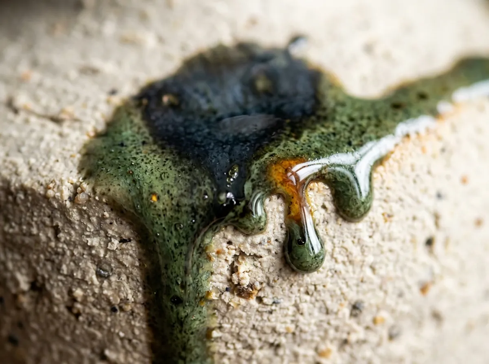
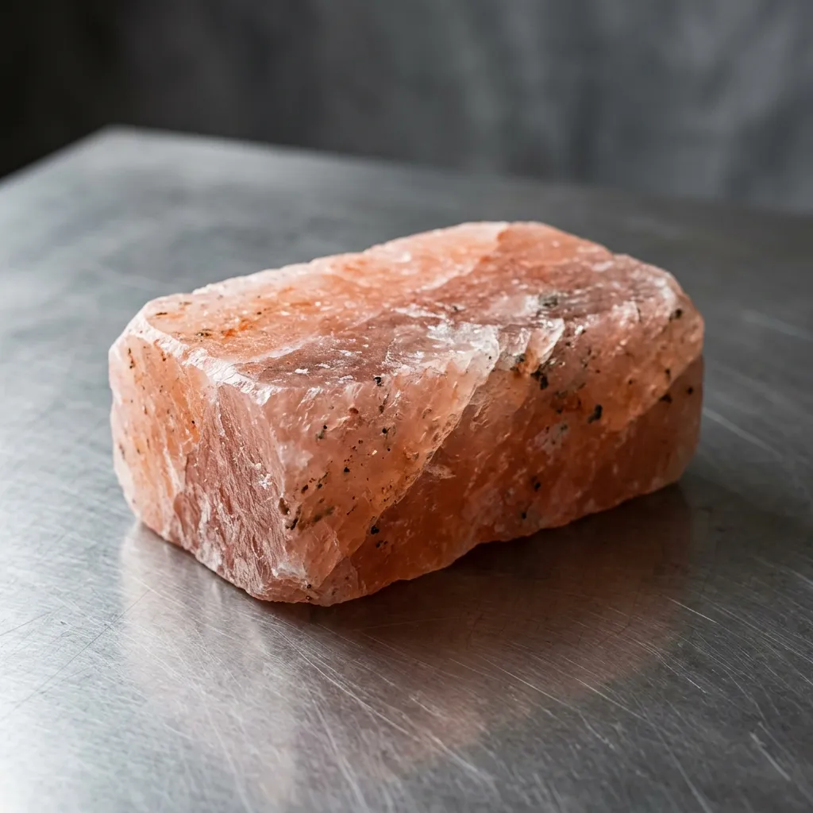
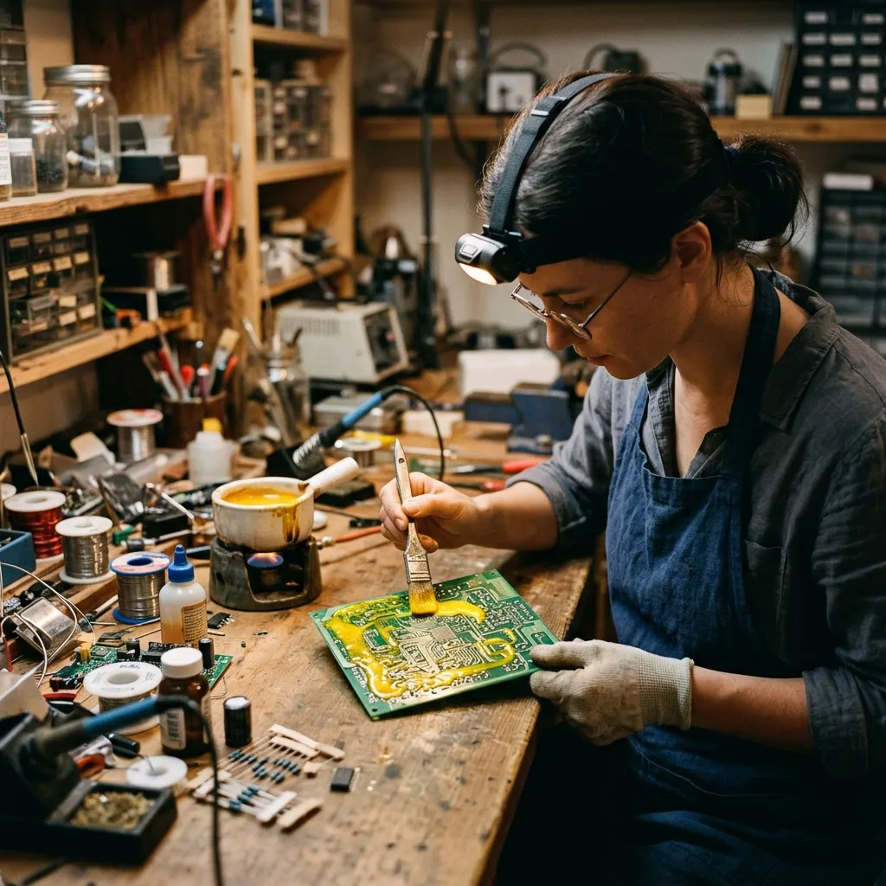
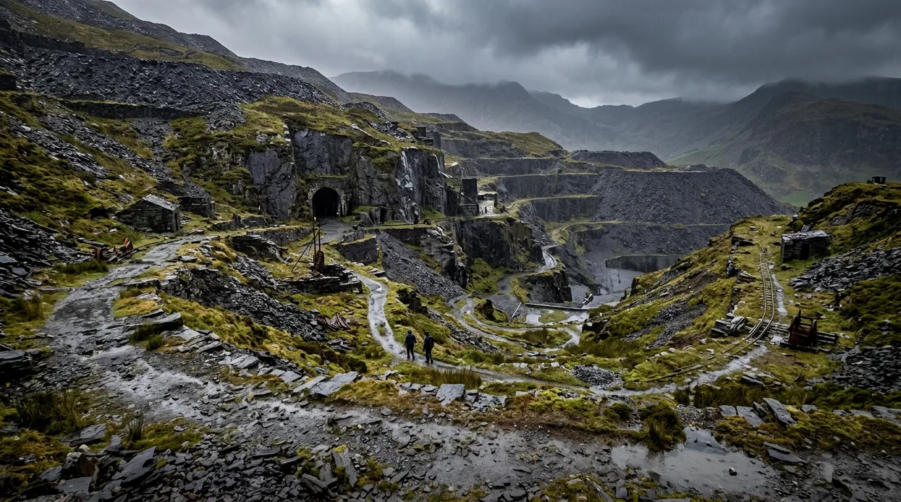

ASH-07 CHAWAN (TEA BOWL)

Hand-thrown, knife-faceted exterior, pooled olive celadon ash melt on rim, raw grogged slate footring.
£180Raw basalt ash glazes and slow-cured Welsh stoneware vessels wood-fired at thirteen hundred degrees.
ASH-07 Studio ages raw clay bodies and throws stoneware vessels inside a disused slate cavern beneath Blaenau Ffestiniog. Our underground chamber maintains ninety-eight percent humidity and a constant eight-degree chill, allowing unthrown clay to mature for three years and dry without micro-fracturing. We fire twice annually in a ninety-six-hour mountain anagama kiln, coating every piece in natural wood-ash glaze and basalt minerals.
Surface air is the mortal enemy of large ceramic vessels. Rapid evaporation, drafty drying rooms, and shifting seasonal temperatures pull moisture from the lip of a wet pot faster than from its base, locking hidden tensile stresses into the clay wall that explode during high-temperature firing. By moving our throwing wheels and aging troughs sixty metres underground into Chamber 7 of the Oakeley slate veins, we eliminated atmospheric fluctuation entirely.
In this cold, dripping subterranean silence, the humidity never wavers from ninety-eight percent. We blend iron-rich Welsh stoneware clay with thirty percent crushed slate aggregate, kneading the damp mass on slate slabs and leaving it to ferment in dark stone troughs. When thrown on the wheel, the clay exhibits an elastic density and structural memory that permits razor-thin walls and wide cantilevered rims that would slump in a dry surface studio.
We glaze our work using only raw unwashed volcanic basalt sand and local oak ash gathered from mountain hearths. During our four-day autumn reduction firing, drifting wood embers settle onto the raw clay, melting into a glassy, olive-green celadon patina flecked with iron blossoms. Each vessel emerges with a stony, tactile footring that carries the mineral signature of Eryri.

Hand-thrown, knife-faceted exterior, pooled olive celadon ash melt on rim, raw grogged slate footring.
£180
380 mm wide shallow dish, 30% slate aggregate body, unglazed rim with flame-flashed orange scorch marks.
£340Paddle-shaped 280 mm stoneware vase, raw volcanic sand glaze, high-iron reduction.
£260150 × 150 mm hand-pressed stoneware tiles for hearth and wet-room claddings.
£28 per tile
1.4-litre stoneware jug with pulled handle, wood-ash drip trail, non-drip trimmed spout.
£220The unyielding geological conditions of Chamber 7 grant our clay an extended structural maturity impossible to replicate in a surface-level studio.
Our raw glacial clay rests in slate troughs for a minimum of three years. This extended subterranean fermentation develops a high-plasticity bacterial structure.
By blending thirty percent crushed Blaenau Ffestiniog slate aggregate into our throwing body, we match the thermal expansion coefficient required to survive rapid kiln cooling.
Raw basalt sand and unwashed oak ash melt at 1,280°C. Maintaining our anagama kiln at 1,320°C for ninety-six hours ensures a deep, crystalline celadon eutectic fusion.
"The weight and balance of the ASH-07 chawan defy its brutalist exterior. The heat retention during the tea ceremony is remarkable."
"These vessels carry the undeniable, brooding mineral weight of the Welsh landscape. An absolute triumph of elemental ceramics."
"We specify their architectural tiles for every wet-room project. The raw basalt texture provides a lifetime of uncompromising durability."
Our production is strictly limited to two firings per year. Submit a requisition form below to reserve an allocation from the upcoming autumn reduction.
